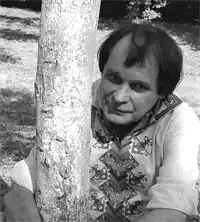

Чирков Сергій Миколайович (5 липня 1950 року) – сучасний український прозаїк, поет, публіцист, перекладач.
Народивсь у селі Новолимарівка Луганської області. Після закінчення школи здобув вищу філологічну освіту в педагогічному інституті імені Т.Г. Шевченка міста Луганська, навчався на заочному відділенні Літературного інституту імені М. Горького у Москві.
Відомий як організатор видавничої справи: два десятиліття очолював журнал для підлітків "Однокласник", понад десять років був засновником, видавцем і незмінним керівником журналів "Лель" і "Лель-ревю", директором приватної видавничої структури. Починав як російськомовний поет. Останнім часом зосередився на прозі – випустив двотомний роман-подорож "Ковчег. Колискова для смерті", повість "Дім-Дом". Активно виступає з публіцистичними статтями і політичними коментарями. Член творчих спілок письменників і журналістів. Заслужений працівник культури і відмінник народної освіти України. Живе і працює в Києві.